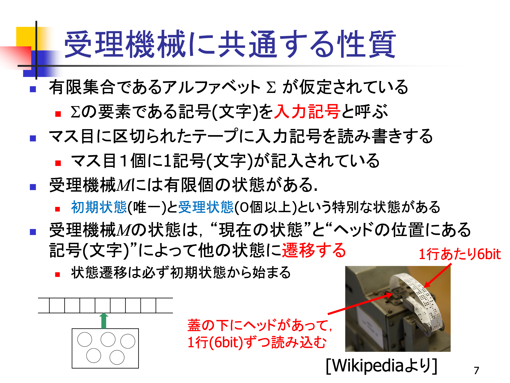
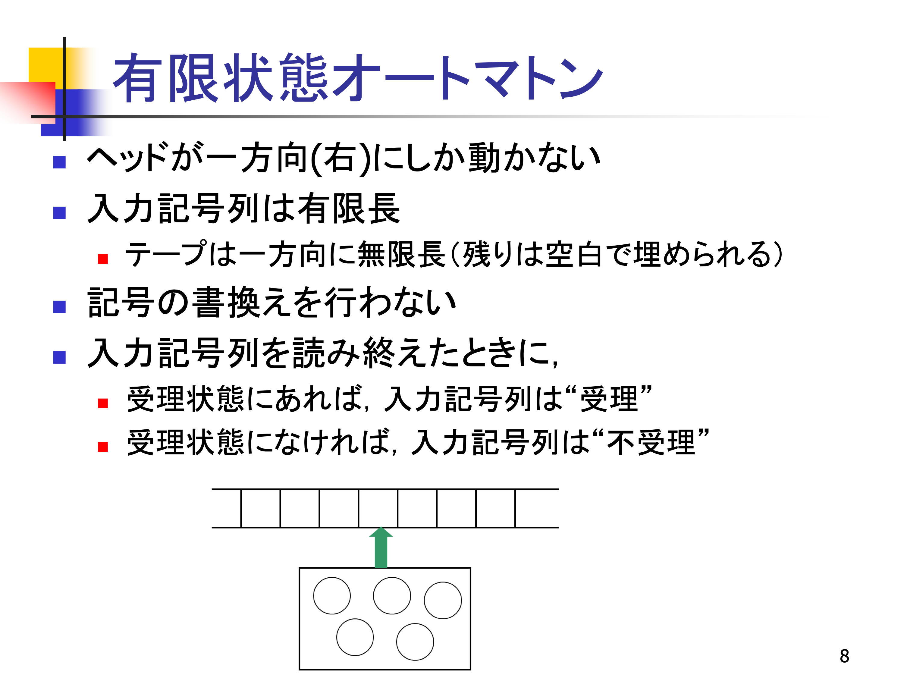

講義を通して言いたいこと
有限状態オートマトンは、入力を1文字ずつ読みながら、今まで読んだ内容に応じて状態を変える機械。有限の入力を全部読み終えたとき、受理状態にいるかで、その入力を受理するか決める。
共有会話で疑問に挙がった範囲（スライド7・8）の補足。第3回全体を網羅する資料ではありません。画像を押すと元PDFの該当ページを開けます。
1. テープを読む仕組み
章の想定読了時間 約2分

解説 1｜記号を読み、状態を変える
想定読了時間 約2分
このスライドの中心は、「現在の状態」と「いま読んでいる記号」をもとに、次の状態へ移るという仕組み。記号とは a や b のような文字で、使える記号の有限な集合をアルファベット Σと呼ぶ。
疑問①「右下の写真は何？」
紙テープに開けた穴を読み取る「紙テープリーダー」。
昔のコンピュータなどで、データを入力するために使われた装置。穴の有無を0と1に対応させ、その並びをデータとして読む。写真の注記では、テープの幅方向の1行が6ビットで、テープを送りながら1行ずつ読み込む。この実物の写真が、「テープ上に並んだ情報を順番に読む」という仕組みをイメージさせている。
疑問②「ヘッドって何？」
テープの記号を読み取る部分。機械がいま注目している場所に当たる。
左下の図では、緑の矢印が指す1マスが、ヘッドが読んでいる位置。その記号と現在の状態によって、次の状態が決まる。この状態の変化を状態遷移という。
2. 入力の長さと、受理の判定
章の想定読了時間 約3分

解説 2｜最後まで読んだ時点で判断する
想定読了時間 約3分
有限状態オートマトンでは、ヘッドは右にだけ進み、記号を書き換えない。有限個の状態を使い、読み進めるたびに状態を更新していく。
疑問③「入力記号列は有限長なのに、結局、無限なの？ 有限なの？」
入力された文字列は有限。文字列を載せるテープは無限。
「入力」と「入れ物であるテープ」の、別々の長さを説明している。例えば入力が abc なら、入力の長さは3文字で、残りのマスは空白で埋まっている。
［a］［b］［c］［□］［□］［□］…最初の3マスが入力。□は空白で、その先も空白のマスが続く。説明用の図。
無限に続く空白を全部読む必要はない。この講義の有限状態オートマトンは、入力 abc の3文字を読み終えた時点で判定する。
疑問④「受理状態にあるってどういうこと？」
「この状態で入力を読み終えたら合格」と決めてある状態にいること。
状態は、読み進める途中の機械の内部状況。そのうち合格の目印が付いたものが受理状態である。例えば、使える文字が a, b で、「最後の文字が a の文字列」を受理したいなら、次の2状態を用意できる。
| 状態 | 何を覚えているか | 読み終えたとき |
|---|---|---|
| A（受理状態） | 最後に読んだ文字が a | 受理する |
| B（初期状態） | まだ何も読んでいない、または最後の文字が b | 不受理にする |
初期状態は読み始める前の状態。この例ではBから始め、a を読むとAへ、b を読むとBへ移る。文字列全体を記憶しなくても、最後の1文字に必要な情報だけを状態に残せばよい。
| 入力 | 初期状態 → 1文字読むごとの状態 | 判定 |
|---|---|---|
bba | B → B → B → A | 最後がAなので受理 |
aab | B → A → A → B | 最後がBなので不受理 |